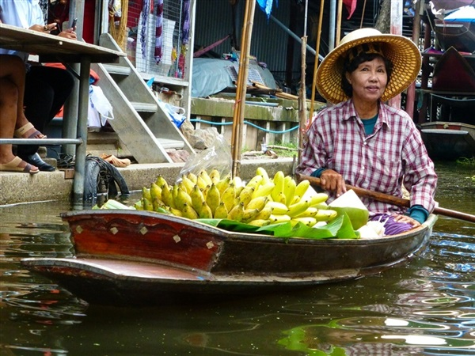

95% din 60 milioane de thailandezi sunt budiști, 4% sunt musulmani și 1% sunt creștini de toate confesiunile.Influența budismului se poate observa și în viața de zi cu zi a thailandezilor. Budismul descurajează competiția. Prin urmare, thailandezii nu sunt foarte ambițioși, refuzând să facă schimbări. O muncă ușoara, plătită mulțumitor este mai bună decât o muncă grea, plătită bine.
Ritmul de lucru crește sau scade în funcție de prezența șefului, autoritatea fiind respectată când este prezentă, însă adesea ignorată în absență.